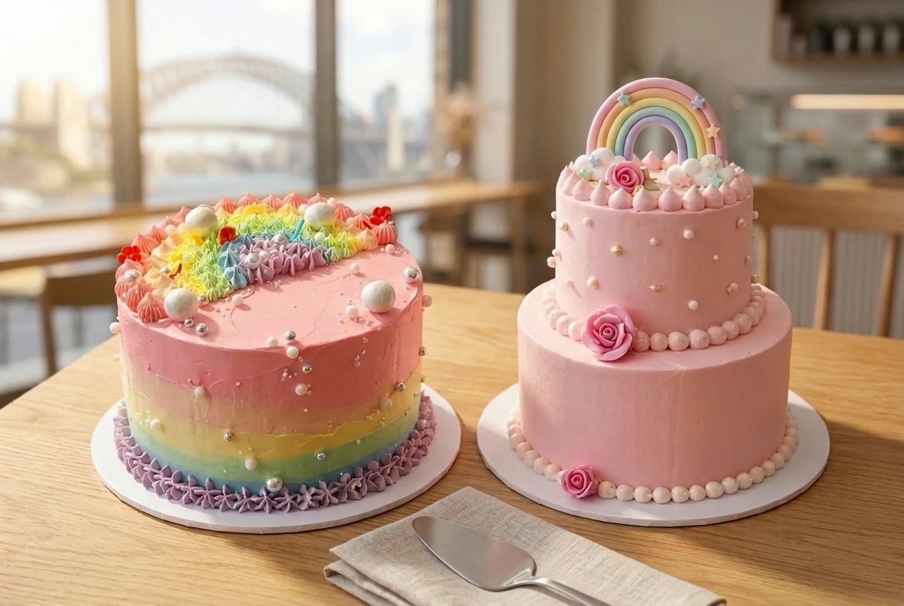
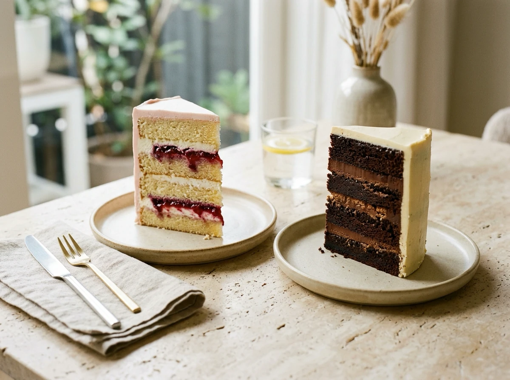
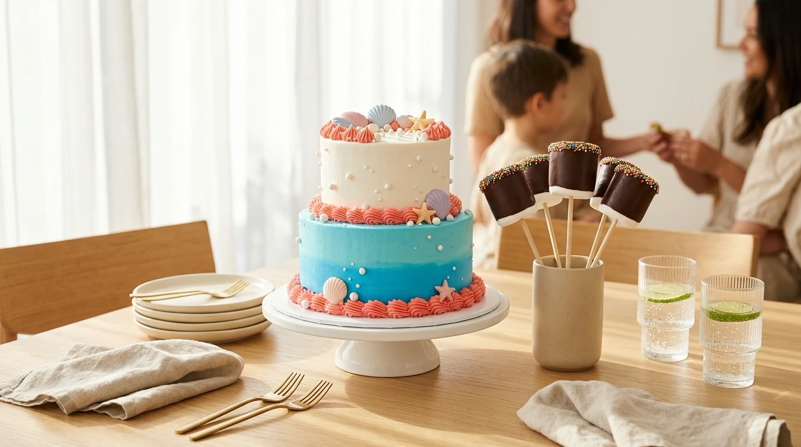

VERYGOOD JOURNAL · CUSTOM CAKES · CELEBRATION PLANNING GUIDE
A practical guide to choosing tiers, sizes, flavours and S’more Stick add-ons — plus how to brief a smooth, stress-free bespoke cake order in Melrose Park.
Ordering a bespoke celebration cake is exciting—whether for a child’s milestone birthday, a family lunch or an engagement dinner—yet many Sydney hosts hesitate at the very first choice: should you order a single-tier cake or step up to a two-tier design?
The best choice comes down to three practical realities: guest count, table photography height, and how easily the cake will travel and chill before candle time.[7][15]
KEY TAKEAWAY · SIX SIZES, FOUR FLAVOURS, NO UPFRONT PAYMENT
Choose Single Tier (6", 8" or 10") for easy fridge fit and drives, or Double Tier (4+6", 6+8" or 8+10") for tall milestone impact—paired with Triple Berry, Nutella, Oreo or Biscoff and optional S’more Sticks.

Every bespoke cake in our Sydney studio is built across two structural formats and six curated size combinations.[15] A 4 + 6 inch double tier gives you vertical celebration theatre without needing a 40-person crowd—while an 8-inch or 10-inch single tier maximises slice count with a lower, easier-to-drive profile:
TIER ARCHITECTURE · MATCHING HEIGHT TO VENUE, FRIDGE & CAR
SINGLE TIER · 6" / 8" / 10"
Low-Stress Everyday Centrepiece
Fits comfortably on a standard home fridge shelf and travels with a low centre of gravity across Sydney for birthdays, dinners and park picnics.[7][15]
Easiest to slice straight through without dowels.
DOUBLE TIER · 4+6" / 6+8" / 8+10"
Tall Milestone Statement Cake
Creates immediate focal-point height for first birthdays, engagements and larger gatherings—with 4+6" giving two-tier elegance for mid-sized tables.[15]
Clear a tall fridge shelf and drive flat on the floor.
A memorable custom cake should taste every bit as considered as it looks from the outside.[12] Every AU bespoke order starts with your choice of four crowd-pleasing flavours—Triple Berry, Nutella, Oreo or Biscoff—matched cleanly to soft sponge and velvety cream.
Hosting a children’s birthday or busy family gathering? You can also add dark-couverture S’more Sticks right inside your Custom Cake request so younger guests grab a treat immediately while your main cake waits undisturbed for candles.

CUSTOM FLAVOUR LINEUP · FOUR CROWD-PLEASING PROFILES
BRIGHT & FRUITY
Triple Berry
Soft sponge layered with tangy-sweet berry compote and cream—fresh, light and balanced after lunch or dinner.
CHOCOLATE-HAZELNUT
Nutella
Silky roasted hazelnut-chocolate richness that bridges children’s birthday tables and adult chocolate lovers.
COOKIES & CREAM
Oreo
Classic cocoa-biscuit contrast folded into smooth cream for nostalgic crunch and effortless all-ages appeal.
SPICED CARAMEL
Biscoff
Warm caramelised biscuit notes that feel cosy, grown-up and made to pour beside flat whites or black tea.
Because bespoke designs are quoted and scheduled individually around complexity and kitchen availability, preparing a clear brief and safe pickup setup makes the entire day effortless:
BESPOKE ORDERING & PICKUP · FOUR ESSENTIAL HABITS
• Share four details in your note: Outline your colour palette, theme or piping style, exact cake lettering, and figurine preference—no upfront payment is taken while we review design and availability.
• Plan around weekend pickup hours: Pre-arranged pickup in Melrose Park, Sydney runs Fri 18:00–20:00 and Sat–Sun 08:00–20:00; exact handoff details are sent once confirmed.
• Drive flat on the car floor: Clear a tall fridge shelf ahead of time and carry the box level on an air-conditioned car floor or boot—never tilted on a seat.[7]
• Remove dowels and chill promptly: Keep buttercream cakes at 5 °C or below, follow Australia’s 2-hour / 4-hour rule,[24] and lift internal supports before slicing tier by tier with a warm, wiped knife.[17]
ALLERGEN & DIETARY REMINDER · FSANZ TRANSPARENCY
Custom cakes and S’more Stick add-ons involve dairy, eggs, wheat, soy and (depending on flavour such as Nutella) tree nuts or shared kitchen allergens. Please confirm any guest food allergies with our team before finalising your bespoke request.[23]

VERYGOOD CHOCOLATE · MELROSE PARK PICKUP · SYDNEY
Start your bespoke celebration request on our Custom Cakes page — select Single Tier or Double Tier, pick your size and flavour, add optional S’more Sticks and share your design vision for pre-arranged pickup in Melrose Park, Sydney.
[7] https://www.foodstandards.gov.au/business/food-safety/transporting-food-safely — FSANZ — Transporting food safely
[12] https://www.kingarthurbaking.com/learn/guides/cake — King Arthur Baking — Cake Baking Guide
[15] https://www.cakefromtheheart.com.au/cake-sizing.html — Cake from the Heart (Australia) — Cake Sizing Guide
[17] https://www.lamanna.com.au/cake-cutting-guide — LaManna Patisserie (Australia) — Cake Cutting Guide
[23] https://www.foodstandards.gov.au/consumer/labelling/allergen-labelling — FSANZ — Allergen labelling for consumers
[24] https://www.foodstandards.gov.au/business/food-safety/2-hour-4-hour-rule — FSANZ — 2-hour / 4-hour rule